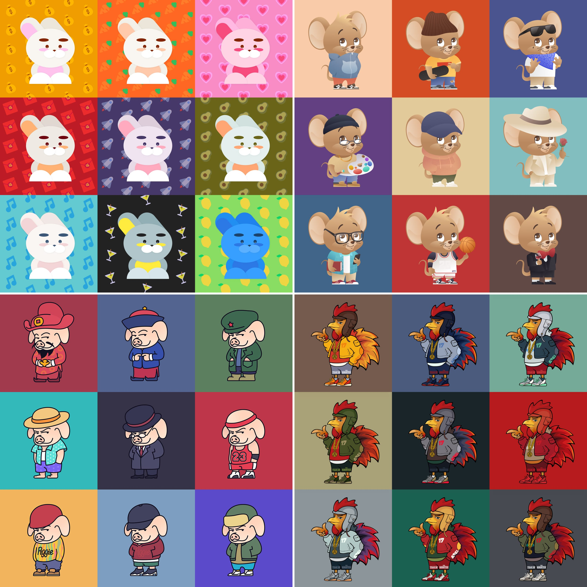
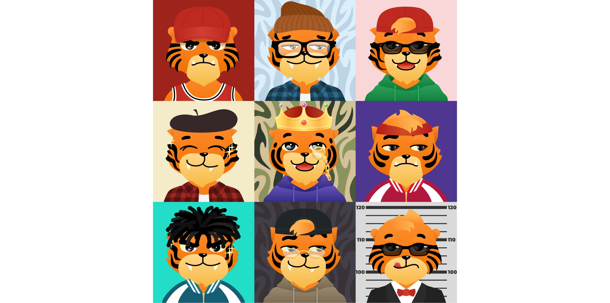
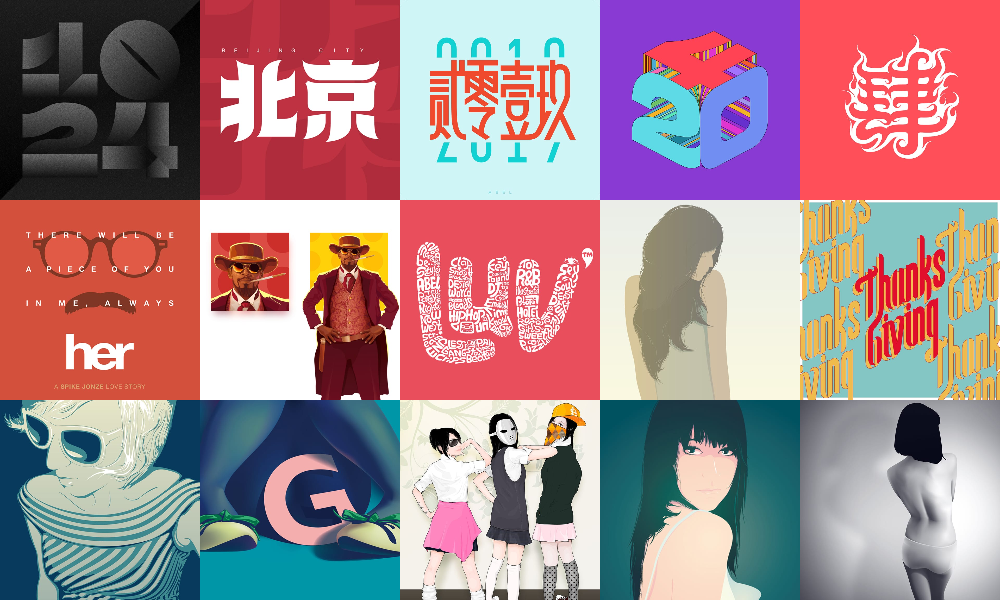

Loading...
Loading...
Chinese Zodiac Animals NFT Artwork
As a tribute to China's traditional zodiac culture, I dedicated several years during my personal time to creating a series of zodiac animal-themed illustrations, including the rooster, pig, rat, rabbit, and tiger. These works were not only a celebration of each lunar year but also a playful exploration of cultural symbolism through modern digital art.
Each illustration integrates elements I personally enjoy, often referencing or paying homage to beloved characters from popular media. For example, the rat design was inspired by Jerry from the classic cartoon "Tom and Jerry," while the pig character was a nod to Oolong, the humorous shapeshifter from Akira Toriyama’s "Dragon Ball." Reimagining these characters in new outfits and stylized poses to capture the festive spirit of Chinese New Year was a fun and experimental design journey for me.
The tiger series, in particular, stands out as a special project. This character was designed with interchangeable facial features such as eyes, mouth expressions, facial patterns, hats, and other accessories like glasses. By creating multiple variations for each layer, I was able to algorithmically generate thousands of unique tiger designs. From this extensive set, I selected 256 unique combinations to mint as NFTs, marking my personal exploration into the NFT space at the height of its popularity. This project combined my passion for illustration, technology, and the spirit of creative play.
Personal Illustrations
Additionally, this collection includes various digital art pieces I created during my student years. Many of these illustrations were inspired by artistic works I loved, such as tribute posters and illustrations for films like Her and Django Unchained. These artworks allowed me to blend personal aesthetic interpretations with iconic cultural references, serving as a heartfelt expression of my admiration. While some of these early pieces might appear relatively immature now, they still hold sentimental value and represent an important part of my creative journey. Notably, some of these works were featured in early flash-based digital art magazines and creative online platforms popular at the time.